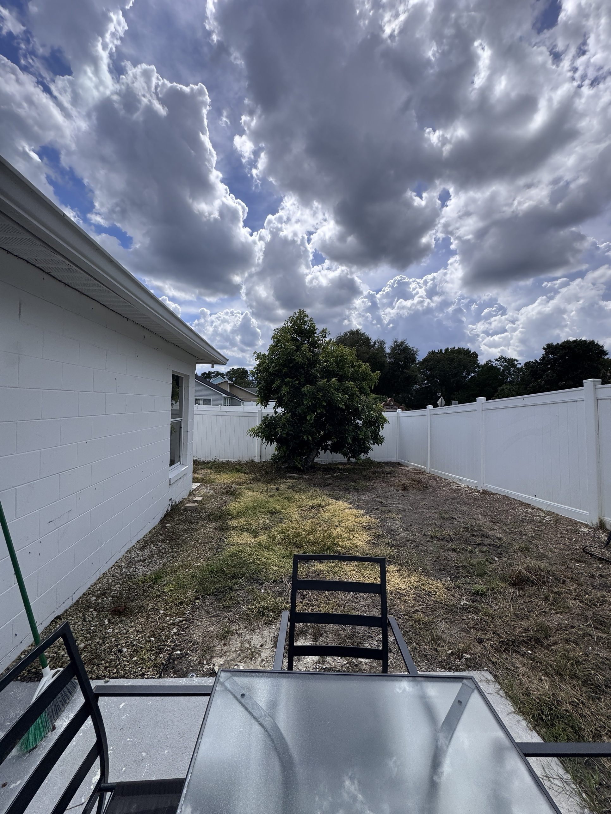
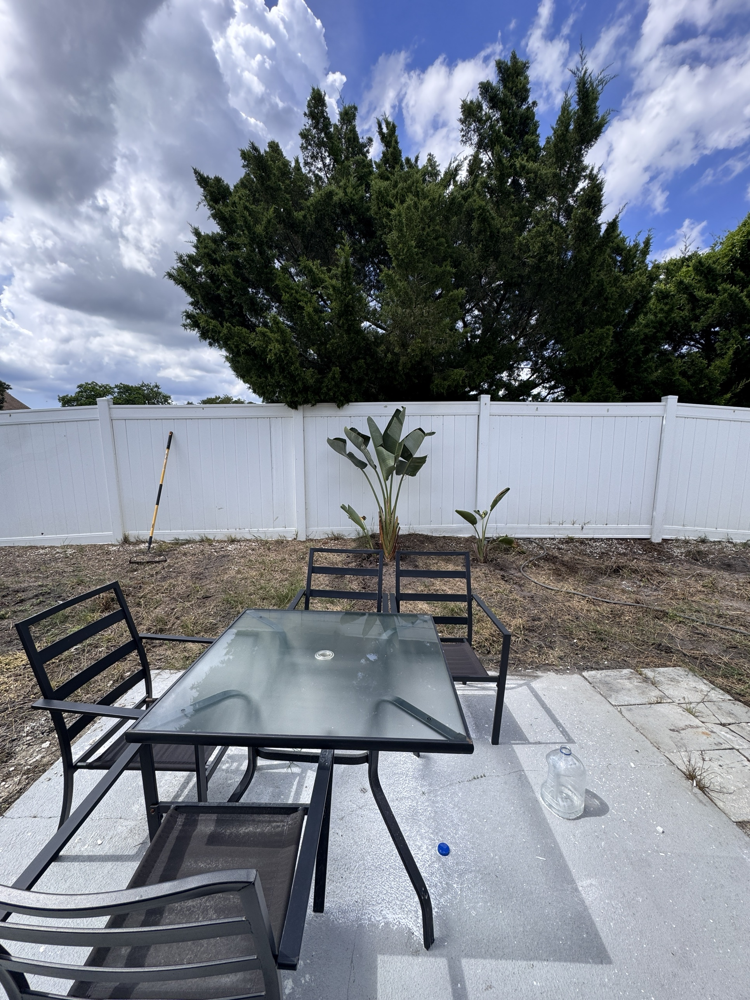
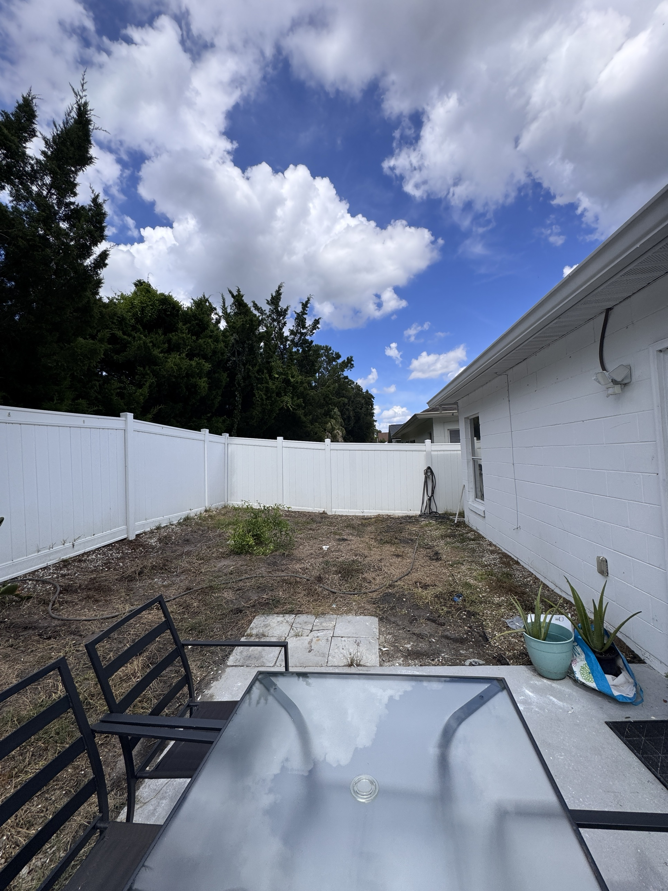

Three rooms, no lawn, nothing to mow. A fire pit lounge under the fruit tree on the left, a paver terrace in the middle where your table already sits, and a block-and-slab outdoor kitchen wrapping the back-right corner — placed so it is the thing you see when you look out the dining room window. Terracotta pavers, gold crushed granite, brown bark and river rock do the work that grass was failing at.
Drawn from your three photos, looking down with the house along the bottom and the back fence at the top. The dashed fans mark where each photo was taken from.
The view test. Stand at the dining window and the gold fan is what you get: the kitchen counter reads as a long horizontal line across the back-right, the corrugated shield catches late sun, and the junipers behind the fence become the backdrop instead of a bare fence panel. Nothing tall sits between the window and the counter, so the yard still reads deep.
The plan is drawn from photos, not a survey — check the fence-to-house dimensions with a tape before ordering material, and tell me if the dining window is actually on the left wall instead and I'll flip the kitchen.

This leg is the shadiest part of the yard by mid-afternoon, which is exactly why the grass gave up here. Stop fighting it. A 16-foot circle of gold crushed granite, compacted and edged, sits partly under the canopy so the tree is doing the work an umbrella would.

Demo is the single most expensive thing you could do here and it buys nothing. The slab is sound and roughly level, so lay tumbled pavers on a compacted base right up to its edges, flush, with a soldier course framing the whole terrace. Read from the window it becomes one surface.

Right now this corner is the weakest thing in the yard and it is the first thing the window sees. An L-shaped counter wrapping the back and right fence turns it into the focal point — and the hose bib and exterior outlet already on that wall mean you get water and power without a trench.
No mortar, no footing, no contractor. Two courses of dry-stacked block, a slab top, and a finish that reads far more expensive than it is.
Reuse a kettle grill instead of buying the slide-in and it lands at $698. Swap the concrete slabs for a granite remnant from a local fabricator and add roughly $220.
Do not skip the air gap. Vinyl fence panels start to soften and cup somewhere around 160 °F, and a closed grill hood radiating at a panel 4 inches away will get there on a July afternoon. The galvanized panel plus 6 inches of moving air is the whole fix, and it costs $92.
Four ground materials and three accents. The white fence and white block house stay white — they're the negative space that makes the warm tones read.
| Plant | Qty | Where | Fall show | Water |
|---|---|---|---|---|
| Muhly grass Muhlenbergia capillaris | 9 | Back fence bed, in front of the bird of paradise | Pink smoke, Oct–Nov | Low |
| Firebush Hamelia patens | 3 | Left fence behind the fire circle | Scarlet tubes, red leaves | Low |
| Croton 'Mammy' Codiaeum variegatum | 5 | Kitchen corner, framing the counter | Orange/gold year-round | Low |
| Copper plant Acalypha wilkesiana | 3 | Terrace corners | Bronze foliage | Moderate |
| Coontie Zamia integrifolia — FL native | 7 | River rock strip along the house | Deep green, structural | Very low |
| Blue daze Evolvulus glomeratus | 12 | Path edges | Blue against the rust | Low |
| Bird of paradise Existing — keep | 3 | Back center, already planted | Architectural backdrop | Moderate |
| Fruit tree Existing — keep | 1 | Back-left corner, over the lounge | Shade + fruit | Moderate |
DIY materials only, 2026 Central Florida big-box and bulk-yard pricing, no labor. Bulk delivery beats bags by roughly half on anything over a ton.
| Scope | Budget | Recommended | Stretch |
|---|---|---|---|
| Kill turf, clear, grade, edging | 180 | 260 | 340 |
| Fire pit lounge — granite circle + ring | 420 | 640 | 1,150 |
| Terrace pavers + two paths | 690 | 1,120 | 2,400 |
| Outdoor kitchen | 700 | 980 | 2,300 |
| River rock, mulch, fabric | 340 | 520 | 780 |
| Plants | 160 | 380 | 700 |
| Low-voltage lighting | 90 | 210 | 480 |
| Total materials | $2,580 | $4,110 | $8,150 |
The order matters: base work before anything pretty, and the kitchen before the surfaces around it so you can drop block without protecting pavers.
Keep bark mulch a full 12–18" off the block walls. The river rock drip strip in the plan is doing that job, not decoration — and it's why the existing gravel strip along the left wall should stay.
Woven landscape fabric under rock, yes. Under mulch, never — it fails in about two seasons and then you're pulling shredded plastic out of the bed. Use plain cardboard and 3" of mulch instead.
Your yard already sheds toward the back fence. Keep that. Pavers and compacted granite both shed water, so removing turf means slightly more runoff — hold ¼" per foot of fall away from the slab and don't dam the low corner with edging.
Wood-burning pits need 12 feet of clearance to the fence, the house and the tree canopy, and many Central Florida HOAs and counties restrict open burning during dry season. A propane insert sidesteps all of it for about $320 more.
Check the ARC rules before you set block. Permanent structures along a fence line and anything over 30" tall are the two things that commonly need approval, and a dry-stacked counter still reads as permanent.
No grass doesn't mean no weeding. Two applications of a granular pre-emergent a year, spring and fall, over rock and mulch alike, is the difference between this looking sharp in year three and looking abandoned.